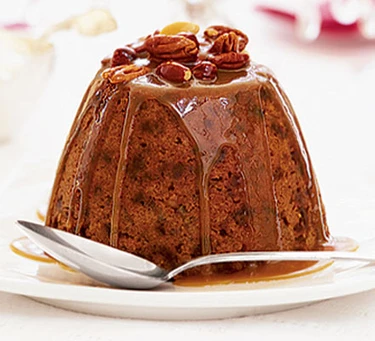

Christmas Pudding Recipe

Christmas Pudding
A classic light, spiced Christmas pudding - so simple you don't even need any kitchen scales
Ingredients
- 1 cup raisins
- 1 cup sultanas
- 1 cup self-raising flour
- 1 cup finely grated butter (about 115g/4oz)
- 1 cup fresh brown breadcrumbs (from around 4 thick slices of bread)
- 1 cup light muscovado sugar
- 1 cup mixed nuts, chopped plus extra to decorate
- 1 tsp ground cinnamon
- 1 tsp ground mixed spice
- 1 cup milk
- 1 large egg
- butter, for greasing
For the butterscotch sauce
- 85g butter
- 100g light muscovado sugar
- 200ml double cream
- 1 tsp vanilla extract
Steps
- For the pudding, empty the first six cups and the nuts, if using, into a mixing bowl with the spices, then stir in the milk and egg. Once well combined, tip into a buttered 1.5 litre pudding bowl.
- Cover with a double layer of buttered foil, making a pleat in the centre to allow the pudding to rise. Tie the foil securely with string, then place in a steamer or large pan containing enough gently simmering water to come halfway up the sides of the bowl. Steam, covered with a lid, for 2½ hours. Check the water level during cooking, topping up if necessary. If you are preparing this pudding ahead, remove the foil, let it cool slightly, then wrap in cling film and then fresh foil. If you are serving it immediately, unwrap and invert onto a deep plate.
- For the sauce, put everything in a pan and bring slowly to the boil, stirring. Allow to bubble away for 2-3 minutes, still stirring, until the sugar has dissolved and the sauce is pale caramel in colour and slightly thickened. Remove from the heat. Pour the sauce over the pudding and decorate with the whole mixed nuts.